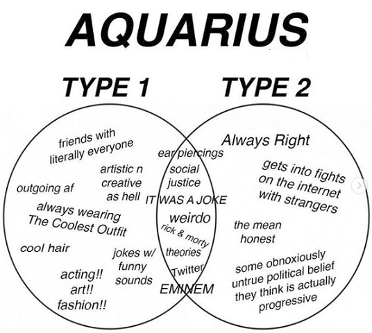

Symbol:The Water-Bearer
Element:Air
Quality:Fixed
Keyword:"I Know"
Ruling Planet:Uranus and Saturn
Strengths:Original, Humanitarian, Honest, Intellectual, Quick-witted
Weakness:Blunt, Uncompromising, Aloof, Insensitive
People born under this sign are known for their uniqueness and nature as an independent individual. They are highly intellectual people who love
to help others. They have a strong desire for freedom because they feel most comfortable to think over new ideas and innovate new things when
they have a complete freedom over their lives and mind. Aquarians often need mental stimulation in order to feel connect.
Aquarians have a strong sense of social justice and the desire to make the world a better place. They want to see themselves as one link to an
endless human chain. They are concerned about others not because of how others treat them or how they want others to treat them. One of the most
obvious traits of those born under the Aquarius zodiac sign is that they are kind, friendly and generous, though later you may find that they
are quite guarded and may choose to keep some emotional distance. Alongside this, they are quite subversive and rebellious in nature.

An Aquarian’s desire to be the centre of attention can sometimes mean that when ignored, they can be deeply hurt. In an effort to once again be
noticed, their peculiarity may be even more noticeable. Sometimes, they seem almost to enjoy the confusion they cause with their peculiar
observations. Their eccentricity can mean that their behaviour sometimes borders on the bizarre and they enjoy the shock that comes with
expressing them. Sometimes this may be entertaining, but it is not always productive.
People born under this sign often zone out from everyone in their lives, preferring to stay aloof leaving their friends in a dismay. They are
often termed as cold but this due to the fact that they don’t want to get attached to anyone as they consider attachments a futile engagement.
They do feel emotions but they just don’t know how to express it.